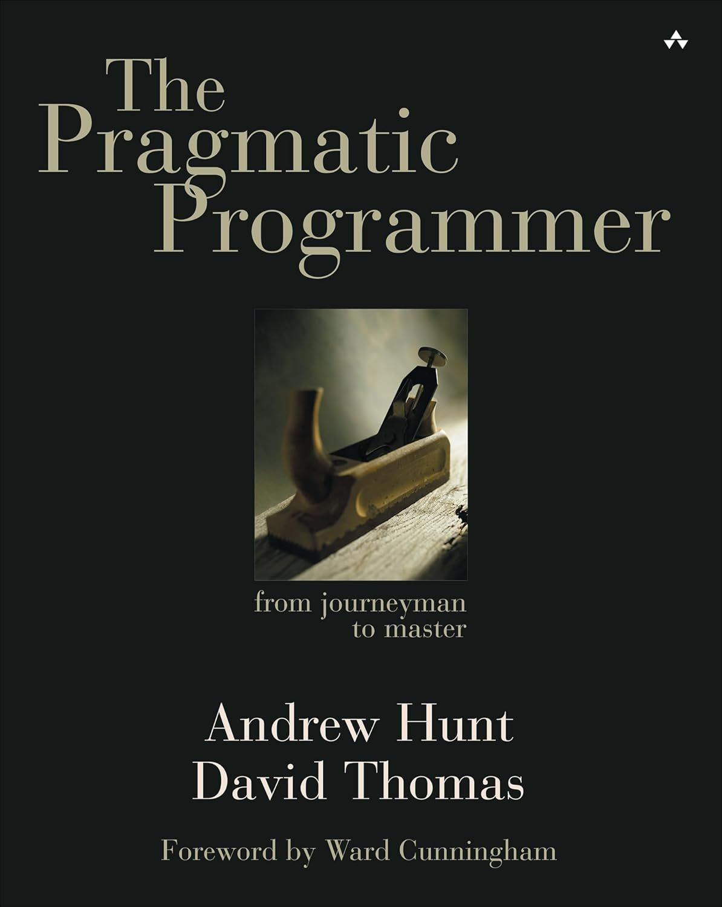
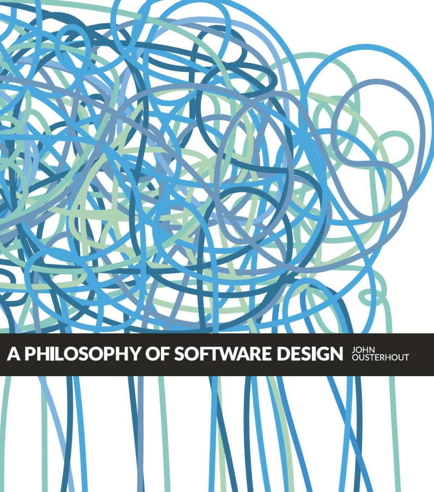

Hey there, web surfer! Welcome to this little corner of the internet.

No analytics, no tracking, just a private place to explore.
Rest, read articles, see some photos, and share your thoughts only if you want to.
About Me
By the way, I'm Andrea, nice to meet you! If you're curious about me, there's a whole section on my background. But if you're too lazy to read that, well, now you know my name!
Currently Reading

AI Engineering: Building Applications with Foundation Models
Why I'm reading it: We're living in the age of AI, so who am I to skip a book on the subject?
Recently Read

The Pragmatic Programmer
The Pragmatic Programmer: From Journeyman to Master is a book about computer programming and software engineering, written by Andrew Hunt and David Thomas and published in October 1999.

A Philosophy of Software Design
"A Philosophy of Software Design" by John Ousterhout offers timeless principles for creating clean, maintainable code. It emphasizes deep modules, managing complexity, and thoughtful abstractions, making it a must-read for developers aiming to write better software.
1984
George Orwell's 1984 is a dystopian masterpiece exploring themes of totalitarianism, surveillance, and the manipulation of truth. Set in a bleak future, it follows Winston Smith as he struggles against an oppressive regime that seeks to control every aspect of life.
Interesting Articles
- Stack overflow is almost dead - Thanks for helping me to start my journey!
- Canon TDD - It might take a mental shift, but it can be worth it!
- LLMs bring new nature of abstraction - LLMs are really transforming software development with non-determinism, marking a shift as big as moving from assembly to high-level languages.
Highlighted Photo
Orange, who will fix this mess?